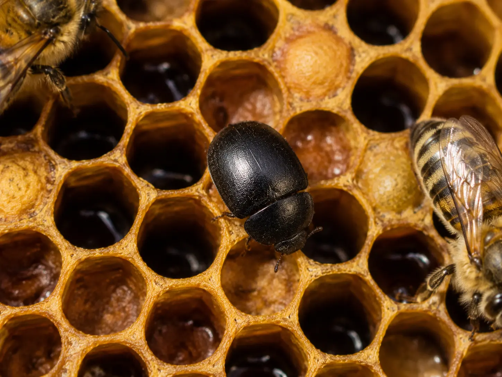

Exotic notifiable pest
Small Hive Beetle (UK): Possible Signs, Risks and What To Do
Last updated: 15 August 2026

Small hive beetle, often shortened to SHB, is a serious exotic pest of honey bee colonies. It is not thought to be present or established in the UK, but it remains a major concern because it can damage comb, consume brood and stores, contaminate honey and weaken or destroy colonies if established.
In the UK, suspected small hive beetle is not something to manage privately. It is a statutory notifiable pest. If you suspect it in your apiary, you must contact the National Bee Unit or your local bee inspector immediately and avoid moving colonies, equipment or honey from the site until advised.
What is the small hive beetle?
The small hive beetle (Aethina tumida) is an invasive pest associated with honey bee colonies. Adult beetles can enter hives, hide in cracks and crevices, and lay eggs. The larvae are the most damaging stage because they feed through comb, consume brood and stores, and can cause honey to ferment and run from the comb.
SHB is different from common nuisance insects occasionally found around hives. It is treated as a serious exotic pest because of the damage it can cause and the difficulty of controlling it once established.
Adult small hive beetle: possible identification features
Adult small hive beetles are small, oval beetles, typically around 5 to 7 mm long. They can appear reddish brown when younger and dark brown to black as they mature. They are fast-moving and may quickly run away from light when the hive is opened.
Adults may hide in corners, cracks, under frame lugs, on the floor, or in dark crevices. If you see an unfamiliar beetle in a hive, avoid assuming it is harmless or definitively identifying it yourself without official guidance. Record what you see, take a clear photograph if possible, and seek advice if it resembles SHB.
Larvae and the damage they cause
The larval stage causes most of the colony damage. Larvae are pale, cream-coloured and grub-like, and they can move through comb feeding on brood, pollen and honey. As they feed, the comb can become slimy, damaged and unusable.
Honey affected by SHB larvae may ferment, smell unpleasant and run from the cells. In severe infestations, comb can collapse, stores can be spoiled and bees may abandon the hive.
Larvae can sometimes be confused with wax moth larvae, but the pattern of damage is different. SHB is associated with slime and fermentation, while wax moth is more associated with webbing, tunnels and silk.
Signs of small hive beetle in a colony
Possible signs that can sometimes be associated with Small Hive Beetle include small dark beetles running across comb or hiding in dark corners, larvae in comb or hive debris, damaged brood comb, slime, fermented honey smells, honey dripping from cells, and bees appearing stressed or abandoning comb.
Eggs may be laid in cracks and crevices, while larvae may gather in groups in corners or cells. The hive may appear messy, wet, slimy or spoiled in a way that does not fit normal wax moth damage or robbing.
These signs require careful assessment because other hive pests or conditions may sometimes appear similar. If you suspect SHB, treat it as urgent and report it rather than trying to manage it yourself.
Is small hive beetle in the UK?
Small hive beetle is not thought to be present or established in the UK. However, it remains a constant risk because bees, queens, equipment and hive products can move between regions and countries. Import controls and early reporting are an important part of preventing establishment.
Because SHB is a statutory notifiable pest, suspected cases must be reported. This is not just about one hive; early reporting protects nearby apiaries and the wider UK beekeeping community.
What to do if you suspect small hive beetle
If you suspect small hive beetle, stop and preserve the situation as far as possible. Close the hive, avoid moving bees, frames, supers, honey or equipment, and contact your local bee inspector or the National Bee Unit immediately.
Do not attempt to treat the colony yourself. Do not sell, move or reuse potentially affected equipment. If you can take a clear photograph without delaying action or spreading material, do so, but reporting and preventing movement are the priority.
Read more: When to call a bee inspector.
How to reduce the risk
Good biosecurity helps reduce the risk from exotic pests. Avoid buying bees, queens or equipment from unknown or untrusted sources. Follow official import rules and be cautious with second-hand equipment, especially if its history is unclear.
Regular inspections make unusual pests easier to notice. Check dark corners, hive floors, comb condition, brood frames and stored comb. Maintain good hive hygiene, keep equipment clean and store spare comb securely.
Registering on BeeBase and staying aware of official pest alerts can also help you respond quickly if the risk changes.
Small hive beetle versus wax moth
Small hive beetle and wax moth can both damage comb, but they do not look exactly the same. SHB damage is strongly associated with beetles, larvae, slime, fermentation and spoiled honey. Wax moth damage is more associated with webbing, tunnels, silk and chewed comb, especially in weak colonies or stored frames.
If you are unsure, do not rely on guesswork. Compare the signs carefully and seek advice if SHB is even a possibility. Wax moth is a common problem in weak or stored comb; small hive beetle is a notifiable exotic pest.
Compare with wax moth signs.
How HiveTag can help
HiveTag can help you keep inspection records, pest notes and photos in one place. If you notice unusual beetles, larvae, slime, damaged comb or sudden colony decline, recording the date, hive, apiary and photographs gives you a clearer timeline.
For serious suspected pests such as small hive beetle, HiveTag records are not a substitute for reporting. They simply help you keep accurate notes while you follow official advice.
Learn more: HiveTag.
Small Hive Beetle FAQ
Small hive beetle is not thought to be present or established in the UK, but it remains a serious exotic pest risk and is monitored because of the potential impact on honey bee colonies.
Yes. Small hive beetle is a statutory notifiable pest in the UK. If you suspect it is present in your apiary, contact the National Bee Unit or your local bee inspector immediately.
Strong colonies may limit beetle activity better than weak colonies, but small hive beetle can still cause serious damage and should not be treated as a normal manageable pest in the UK.
Small hive beetle is very serious because larvae can damage comb, consume brood and stores, contaminate honey, cause fermentation and contribute to colony collapse.